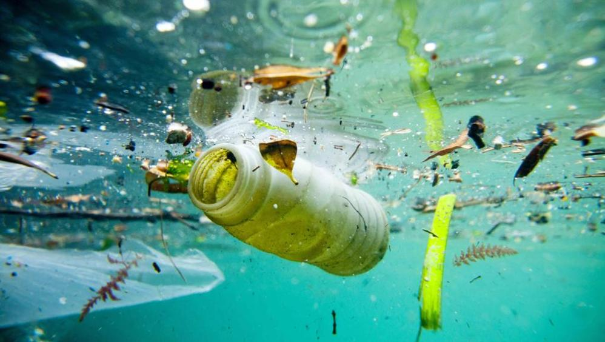

Obiettivo 14 agenda 2030
cos'è l'agenda 2030
l’agenda 2030 è un programma stabilito nel 2015 dai 193 paesi membri dell’ONU.
questo programma è dedicato allo sviluppo sostenibile ed è diviso in 17 obiettivi che dovranno essere raggiunti entro il 2030.
obiettivo 14

uno di questi obiettivi ha come obiettivo generale di conservare e utilizzare in modo durevole gli oceani e le fonti marine,
si tratta del numero 14 il quale ha 10 traguardi che se raggiunti permetteranno il raggiungimento dell’obiettivo generale,
i traguardi sono i seguenti:
- entro l’anno 2025 bisogna ridurre notevolmente l’inquinamento marino, soprattutto l’inquinamento derivante da attività terrestri.
- entro 2020 gestire e proteggere l’ecosistema marino e costiero per evitare cambiamenti irreversibili.
- ridurre drasticamente la acidificazione (procedimento che trasforma una soluzione in acida)degli oceani.
- entro il 2020 regolare la pesca e porre fine alla pesca eccessiva
- preservare almeno il 10% delle aree costiere e marine entro il 2020.
- entro il 2020 limitare il più possibile la pesca illegale e eccessiva.
- entro 2030 aumentare l’economia dei paesi insulari più poveri,aiutandoli con risorse marine.
- aumentare la ricerca e conoscenza scientifica sull’ambiente marino.
fornire l’accesso ai piccoli pescatori e artigiani alle risorse e ai mercatini marini.
- potenziare e conservare l’utilizzo sostenibile degli oceani e delle loro risorse.
